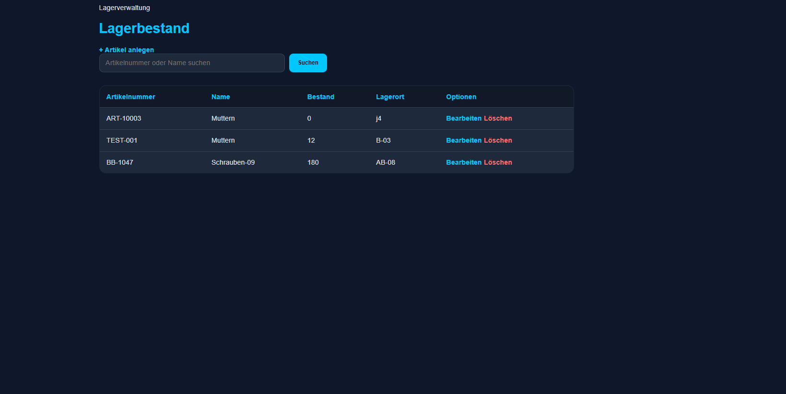
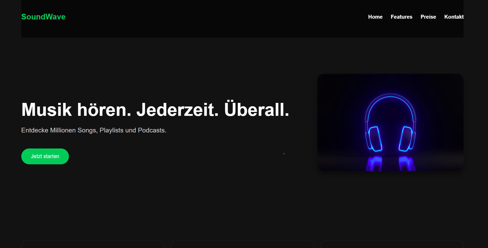
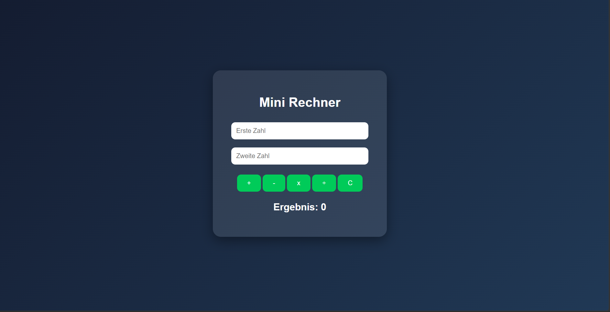
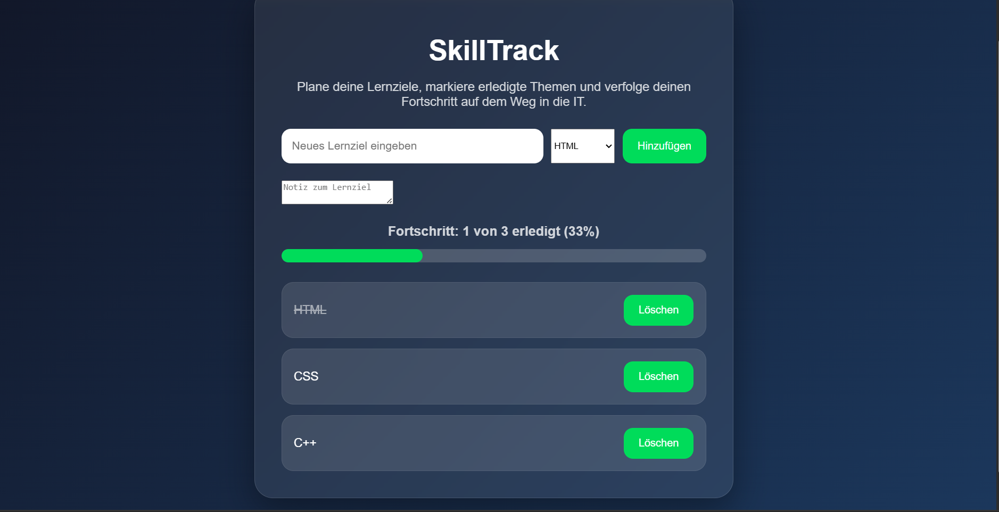

Portfolio Anwendungsentwicklung
Cedric Conrads
Angehender Fachinformatiker für Anwendungsentwicklung
Am 17.08.2026 beginne ich bei COMCAVE in Dortmund meine Umschulung zum Fachinformatiker für Anwendungsentwicklung (IHK). Bereits vor Beginn der Umschulung beschäftige ich mich praktisch mit Webentwicklung, PHP, Datenbanken und der Entwicklung eigener Anwendungen.
Meine Projekte

Lagerverwaltung
Eine datenbankgestützte Anwendung zur Verwaltung von Lagerartikeln. Artikel können angelegt, angezeigt, gesucht, bearbeitet und gelöscht werden.
PHP · MySQL · SQL · CRUD · Prepared Statements
Details ansehen GitHub
To-Do-App
Eine kleine Aufgaben-App mit Hinzufügen, Löschen, Erledigt-Markierung, Enter-Funktion und Speicherung im Browser.
HTML · CSS · JavaScript · LocalStorage
Details ansehen
Musik-Landingpage
Eine moderne Landingpage im Musik-Stil mit Hero-Bereich, Navigation, Feature-Karten, Animationen und responsivem Design.
HTML · CSS · Responsive Design
Details ansehen
Mini-Rechner
Ein Rechner mit vier Grundrechenarten, Fehlerabfragen, Reset-Funktion und Tastaturbedienung.
HTML · CSS · JavaScript · Funktionen
Details ansehen
SkillTrack
Eine Lernfortschritt-App zur Verwaltung persönlicher Lernziele mit Fortschrittsanzeige, Prozentbalken und Speicherung.
HTML · CSS · JavaScript · LocalStorage
Details ansehenProjekt-Details
Mein bisheriger Lernweg
Meine ersten Projekte entstanden mit HTML, CSS und JavaScript. Dabei habe ich gelernt, Webseiten zu strukturieren, Benutzeroberflächen zu gestalten und mit JavaScript interaktive Funktionen umzusetzen.
Anschließend habe ich mich stärker mit Backend-Grundlagen beschäftigt. Dabei kamen PHP, SQL und MySQL hinzu. Mein Ziel war es zu verstehen, wie Anwendungen Daten verarbeiten, speichern und wieder aus einer Datenbank auslesen.
Mit meiner Lagerverwaltung habe ich diese Grundlagen erstmals in einer größeren datenbankgestützten Anwendung miteinander verbunden.
Lagerverwaltung Details
Projektbeschreibung
Die Lagerverwaltung wurde mit PHP und MySQL entwickelt. Mit der Anwendung können Lagerartikel angelegt, angezeigt, gesucht, bearbeitet und gelöscht werden.
Das Projekt bildet damit die grundlegenden CRUD-Operationen Create, Read, Update und Delete ab.
Für Datenbankzugriffe werden Prepared Statements verwendet. Zusätzlich werden Eingaben serverseitig validiert.
Bei der Ausgabe von Daten wird
htmlspecialchars() verwendet, damit bestimmte
eingegebene Zeichen nicht direkt als HTML interpretiert werden.
Gelernt: PHP · MySQL · SQL · CRUD · Prepared Statements · Serverseitige Validierung · htmlspecialchars()
Projekt auf GitHub ansehenTo-Do-App Details
Projektbeschreibung
Die To-Do-App ermöglicht das Hinzufügen, Löschen und Abhaken von Aufgaben. Zusätzlich werden Aufgaben im Browser gespeichert, damit sie nach dem Neuladen erhalten bleiben.
Gelernt: DOM-Manipulation · Events · LocalStorage · dynamische Inhalte
Musik-Landingpage Details
Projektbeschreibung
Die Musik-Landingpage zeigt einen modernen Hero-Bereich, Navigation, Projektkarten, Animationen und responsives Design. Der Fokus lag besonders auf Layout, Farben, Abständen und Darstellung.
Gelernt: HTML-Struktur · CSS-Layout · Flexbox · Responsive Design · Animationen
Mini-Rechner Details
Projektbeschreibung
Der Mini-Rechner kann Addition, Subtraktion, Multiplikation und Division ausführen. Außerdem wurden Fehlerabfragen, eine Reset-Funktion und Tastaturbedienung eingebaut.
Gelernt: Funktionen · Bedingungen · Eingaben auslesen · Rechenlogik
SkillTrack Details
Projektbeschreibung
SkillTrack ist eine Lernfortschritt-App. Lernziele können hinzugefügt, gelöscht und als erledigt markiert werden. Der Fortschritt wird als Text und Fortschrittsbalken angezeigt.
Die Daten bleiben durch LocalStorage auch nach dem Neuladen der Seite erhalten.
Gelernt: Arrays · LocalStorage · Fortschrittsberechnung · dynamische Anzeige
Aktuelle Kenntnisse
Technologien und Konzepte, mit denen ich mich bisher praktisch beschäftigt habe:
Warum IT?
Mich interessiert die IT, weil ich gerne logisch arbeite, Probleme analysiere und Lösungen Schritt für Schritt aufbaue. Besonders spannend finde ich es zu verstehen, wie aus einzelnen Bestandteilen eine funktionierende Anwendung entsteht.
Nach meinen ersten Frontend-Projekten wollte ich deshalb auch verstehen, was hinter einer Anwendung passiert. Dadurch begann ich mich mit PHP, Datenbanken und SQL zu beschäftigen.
Während meiner Umschulung möchte ich meine Kenntnisse in der Softwareentwicklung weiter ausbauen und praktische Erfahrung sammeln. Langfristig interessiert mich besonders der Bereich IT-Security. Dafür möchte ich zunächst ein solides Verständnis dafür entwickeln, wie Anwendungen und Datenbanken aufgebaut und sicher umgesetzt werden.
Dokumentation & Lernnachweis
Developer Workspace
In meinem GitHub-Workspace dokumentiere ich meine Projekte und meinen aktuellen Lernfortschritt.
Projekte · Git · GitHub · Dokumentation
GitHub Workspace öffnenDeveloper BIB
Parallel zu meinen Projekten pflege ich eine eigene Developer BIB. Dort halte ich gelernte Konzepte, Beispiele, typische Fehler und wichtige Grundlagen fest.
PHP · SQL · Git · Webentwicklung · Lernnotizen
Developer BIB ansehenPortfolio-Übersicht
Zusätzlich zur Webseite gibt es eine PDF-Version meines Portfolios. Darin sind bisherige Projekte, Kenntnisse und Lernfortschritte zusammengefasst.
Portfolio · Projekte · Lernfortschritt
Portfolio-PDF öffnenKontakt
Dieses Portfolio dokumentiert meinen bisherigen Einstieg in die Anwendungsentwicklung und wird während meiner Umschulung kontinuierlich um neue Projekte und Kenntnisse erweitert.
E-Mail: cedric.conrads@icloud.com
GitHub: Cedric Developer Workspace